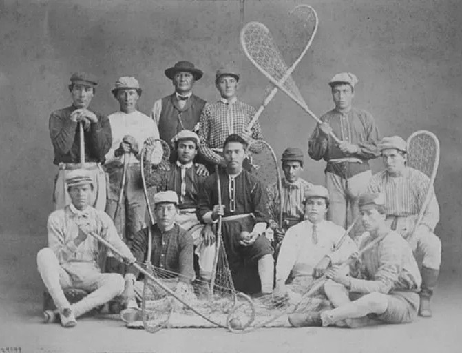

Lacrosse is a fast-paced, high-intensity team sport that originated with Indigenous North American communities. It combines elements of hockey, basketball, and soccer, with players using a lacrosse stick to catch, carry, and shoot a rubber ball into the opposing team’s goal.
The Behind-the-Back (BTB) Shot is a stylish and effective move in lacrosse. It’s used to surprise defenders and goalies, especially in tight angles near the crease.
Lacrosse has deep roots in Native American culture, particularly among tribes like the Haudenosaunee (Iroquois). It was originally played as a ceremonial sport, often involving hundreds of players and games that lasted for days. The modern version began evolving in the 19th century when it was codified in Canada. Today, lacrosse is played at various levels around the world and is known for its speed, agility, and cultural heritage.
